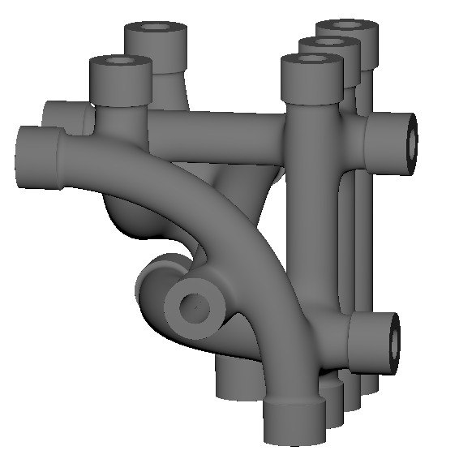

Nobox
See Implicits In Action

Hi, I'm Max, an engineer working at the intersection of computational design and additive manufacturing.
Currently I am:
- Exploring computational Design Capabilities for AM with a focus on Implicit Modeling
- Balancing ambitious vision with real-world constraints
- Seeking matching real-world problems and challenges
My focus currently lies on:
- Implicit Modeling
- Finite Element Analysis

See how we turned ideas into reality. Dive into the stories of successful product designs that make a difference.
Read my CV